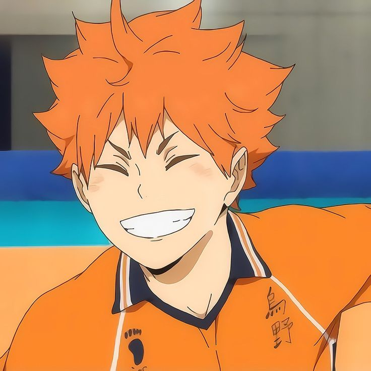
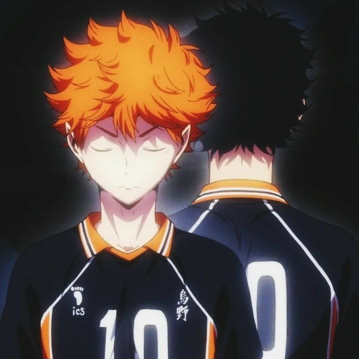

¿Quién es Hinata Shoyo?
Hinata Shoyo es el tipo de persona que ilumina una habitación apenas entra, aunque él mismo no se dé cuenta. Su energía es tan contagiosa que, antes de que te des cuenta, ya estás sonriendo, sintiendo esa misma emoción que lo impulsa a darlo todo en la cancha. No importa cuántas veces caiga, siempre se levantará con más fuerza, como si cada tropiezo fuera solo un paso más en su camino hacia algo más grande. Su pasión por el voleibol no es solo admirable, es inspiradora. Hinata no es el más alto ni el más fuerte, pero su determinación y su amor por el deporte lo llevan a desafiar cualquier límite. No importa quién esté enfrente, él siempre encontrará la forma de seguir adelante, de saltar más alto, de sorprender a todos con su velocidad y agilidad. Su deseo de mejorar no es solo para sí mismo, sino también por su equipo, porque para él, el voleibol no es solo un juego, es una conexión, una promesa de seguir creciendo junto a los demás. Más allá de la cancha, Hinata es alguien con un corazón enorme. Siempre está dispuesto a ayudar, incluso si eso significa meterse en problemas o enfrentarse a sus propios miedos. Su amistad con Kageyama es prueba de ello. Lo que comenzó como una intensa rivalidad se transformó en una relación única, llena de peleas, desafíos y una confianza inquebrantable. Juntos, han logrado un nivel de sincronización que es simplemente increíble de ver. Son polos opuestos, pero de alguna manera, se complementan perfectamente. Pero Hinata no es solo energía y entusiasmo sin límites. También tiene momentos en los que la inseguridad lo alcanza, en los que duda de sí mismo y se pregunta si realmente puede estar a la altura de sus sueños. Y, sin embargo, lo que lo hace realmente especial es su capacidad de seguir adelante a pesar de todo. Puede sentir miedo, puede sentirse pequeño frente a los gigantes del voleibol, pero jamás se rinde. Su resiliencia es lo que hace que quieras creer en él, porque si Hinata puede superar cada obstáculo con una sonrisa en el rostro, tal vez, solo tal vez, tú también puedas hacerlo.

Personalidad y características
Hinata es pura energía y entusiasmo. Es de esas personas que parecen impulsadas por un motor interno inagotable, siempre en movimiento, siempre buscando mejorar. Su carácter alegre y optimista lo hace destacar en cualquier situación, incluso cuando las cosas no están a su favor. No se deja intimidar por el fracaso; al contrario, cada obstáculo lo ve como un nuevo reto a superar. Pero no solo es energía y felicidad sin control. También tiene un fuerte sentido de la competencia y, aunque es amigable, no soporta la idea de quedarse atrás. Es alguien que se esfuerza constantemente porque odia la sensación de impotencia, la de ver cómo otros avanzan mientras él se queda en el mismo lugar. Esa combinación de alegría y determinación es lo que lo convierte en un protagonista tan inspirador.
Su historia y motivación
Desde pequeño, Hinata se obsesionó con el voleibol cuando vio en televisión al “Pequeño Gigante”, un jugador que, a pesar de su baja estatura, dominaba la cancha con su velocidad y salto. En ese momento, Hinata encontró su sueño: quería jugar voleibol y demostrar que el tamaño no lo era todo. El problema era que en su escuela secundaria no había un equipo fuerte, por lo que entrenaba prácticamente solo. Juntaba a cualquiera que estuviera dispuesto a jugar, practicaba en cualquier cancha disponible y se esforzaba sin importar lo difícil que fuera. Finalmente, logró participar en un torneo con su improvisado equipo, pero fueron aplastados por un equipo liderado por Kageyama Tobio. En lugar de rendirse, Hinata usó esa derrota como motivación para mejorar. Cuando ingresó a Karasuno, su destino cambió por completo al encontrarse con Kageyama nuevamente. Y aunque al principio chocaron constantemente, juntos lograron formar una de las mejores parejas de voleibol del anime.

Habilidades y estilo de juego
Al principio, Hinata depende casi completamente de su velocidad y reflejos. No tiene una técnica refinada ni una buena recepción, pero su capacidad atlética es impresionante. Gracias a su velocidad y su increíble capacidad de salto, se convierte en una amenaza para cualquier bloqueo rival. Su mayor fortaleza inicial es su sincronización con Kageyama, quien lo convierte en una especie de "arma secreta" con su ataque rápido sin visión. Esto le permite anotar puntos sin siquiera tener que pensar en la jugada. Sin embargo, con el tiempo, Hinata se da cuenta de que no puede depender siempre de Kageyama y comienza a desarrollar su propio estilo de juego: Aprende a observar la cancha y leer los movimientos del rival,mejora su recepción, que era su punto más débil, aprende a engañar a los bloqueadores con cambios en su dirección de ataque y se convierte en un atacante completo, capaz de anotar por sí mismo. Pero lo que realmente lo hace especial no es solo su mejora técnica, sino su mentalidad. Hinata juega con una pasión desbordante, siempre disfrutando cada momento en la cancha, y eso lo convierte en un jugador único.
Su relación con Kageyama
Si hay algo que define a Hinata es su relación con Kageyama. Al principio, son rivales a muerte: Kageyama lo ve como un jugador sin técnica, y Hinata odia la actitud arrogante de Kageyama. Sin embargo, cuando se ven obligados a trabajar juntos en Karasuno, descubren que su combinación es explosiva. Con el tiempo, su relación evoluciona. Dejan de ser solo compañeros y se convierten en rivales-amigos que se impulsan mutuamente a mejorar. Kageyama reta constantemente a Hinata a superarse, mientras que Hinata le enseña a Kageyama a confiar más en los demás y a disfrutar el juego. Son polos opuestos que, cuando trabajan juntos, logran cosas increíbles.
Su desarrollo y crecimiento
Uno de los momentos más importantes en la historia de Hinata ocurre cuando decide viajar a Brasil para entrenar voleibol de playa. En este punto, ya había mejorado mucho en Karasuno, pero aún sentía que le faltaba algo para estar al nivel de los mejores jugadores. El voleibol de playa lo obliga a jugar sin depender de un armador, lo que le enseña a leer mejor el juego, mejorar su defensa y desarrollar una nueva visión del deporte. Cuando regresa a Japón, es un jugador completamente distinto: sigue siendo el mismo Hinata lleno de energía, pero ahora con una confianza y habilidades que lo convierten en un verdadero profesional.
¿Por qué Hinata es tan querido?
Hinata es un personaje con el que es fácil identificarse porque representa la idea de que el esfuerzo puede superar cualquier obstáculo. No nació con ventajas físicas, no tuvo el mejor entrenamiento desde el inicio, pero su pasión y determinación lo llevaron a convertirse en uno de los mejores jugadores. Nos enseña que no importa qué tan difícil sea el camino, si tienes un sueño y estás dispuesto a trabajar por él, puedes lograrlo. Y lo mejor de todo es que, incluso cuando alcanza nuevas alturas, nunca pierde su esencia: sigue siendo el mismo chico alegre, ruidoso y apasionado que ilumina todo a su alrededor